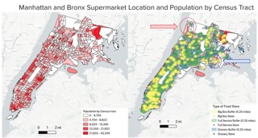

White flight and redlining had lasting effects that creadted food deserts, food appartheid, and vacant commercial buildings at the same time.

People in food deserts have already started growing their own food.
- Government funding needs to be allocated better. Agricultural education programs to willing minorities.
- On a small scale at first, vacant buildings/areas will be used for farmers to sell their produces with a rotating farmers market.